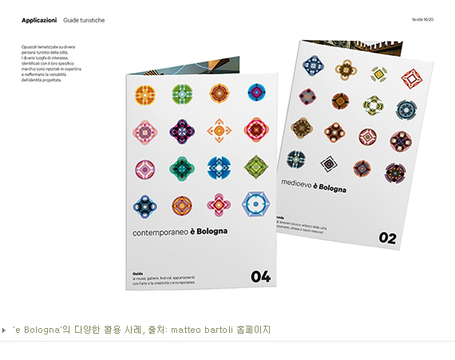

노장수 네이버 그라폴리오 콘텐츠 매니저는 “일러스트에 대한 우리의 생각은 도구가 아닌 문화 콘텐츠다. 영화, 만화, 음악 같은 대중문화로서 충분히 자격이 있다고 생각한다”고 고백했다. 일러스트레이터가 인정받고 작품 활동을 할 수 있는 서비스 마련에 힘을 쏟는 이유다. 미술보다 가볍고 예술보다 편하면서 누구나 향유할 수 있는 문화 콘텐츠로 도약하기 위해, 그라폴리오는 스토리와 튼튼한 플랫폼을 마련했다. 이젠 그것들을 도약대 삼아 세계 무대로 나아갈 전망이다.